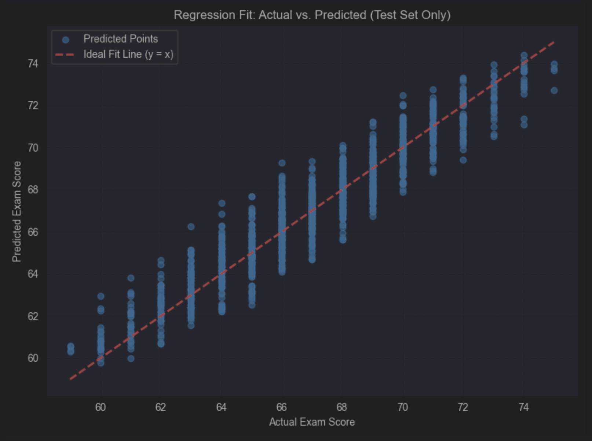

Academic Success: Hardwork or Destiny?
This project explores the complex and often overlooked balance between individual effort and uncontrollable background factors in shaping academic success. By analyzing a dataset of over 6,600 student records—including behavioral, demographic, and environmental variables—we aim to answer two key questions: How much of a student’s performance can be attributed to their own actions? And how much is shaped by factors beyond their control? Through both exploratory analysis and predictive modeling, we reveal the weight each variable carries and provide actionable insights for educators and students.
Correlation Heatmap

This heatmap illustrates the correlation between all features in the dataset, helping us identify the strength and direction of relationships among variables.
It's visible that attendance and study time are the most dominant factors affecting exam grades, followed by previous scores and access to resources.
Controllable vs. Uncontrollable Factors

The bar chart visualizes the correlation of controllable features versus uncontrollable features. Red bars indicate uncontrollable features, while green bars indicate controllable ones.
While attendance and study time clearly play a major role, the chart shows that when these two are excluded, uncontrollable features—such as access to resources and stronger correlations with exam scores than many other controllable variables.
This highlights how environmental background can rival the influence of habits and behaviors students can directly control. As surprisingly as it is, parental involvement showed a negative correlation, indicating families can do more harm then good when acting unconsciously to support their children.
Predictive Modeling
After identifying key relationships in the data, we move forward to predictive modeling to assess how accurately academic performance can be estimated. Our first approach uses all available features in the dataset—both controllable behaviors and uncontrollable background conditions.

We trained a LightGBM model using all available features.
RMSE: 1.03
R² Score: 0.89
This model delivers highly accurate predictions by combining behavioral patterns with environmental context. The strong R² score suggests that most of the variance in exam scores can be explained using the available data—highlighting the power of a well-rounded understanding of both effort and environment.
Interpretation of Features
The feature importance analysis below is based on the model results. Outliers in numerical features were removed and all values were standardized prior to training.
The most influential features were Attendance (+2.29) and Study Time(+1.71), which had the strongest positive impact on exam performance. These were followed by Previous Scores (+0.69), Access to Resources (+0.68), and Tutoring Sessions (+0.50), all of which reflect consistent academic preparation and support.
Moderate contributors include Peer Influence, Parental Education Level, Family Income, and Motivation Level all showing meaningful but less dominant positive effects. Interestingly, Parental_Involvement had a negative weight, possibly reflecting reactive support in struggling situations.
Other features such as Physical Activity, Internet Access, and Distance from Home showed smaller positive effects. Features like Teacher Quality, Gender, Sleep Hours, and School Type showed negligible influence on performance in this model.
Environmental-Only Model
To better understand how much of a student’s success can be explained without behavioral data, we trained a separate model using only uncontrollable, environmental variables—such as family income, parental education, peer influence, and learning disabilities.

RMSE: 1.03
R² Score: 0.89
Surprisingly, the model’s predictive power remains just as strong. Even without attendance or study time, background conditions alone can account for nearly 89% of the variance in student performance. This finding reinforces how powerful—and often overlooked—environmental and demographic factors are when it comes to academic outcomes.